- Louvre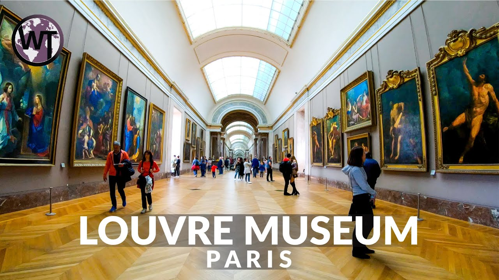
The Louvre in Paris is one of the world’s largest and most visited art museums in the world. The museum opened in 1793 and is housed in the Louvre Palace, a former royal palace. The famous glass pyramid which in the main courtyard of the Louvre Palace was added in 1989 and serves as the main entrance to the museum. Its exhibits come from such diverse origins as ancient Egypt, classical Greece and Rome, medieval Europe and Napoleonic France. Its most famous exhibit, of course, is Leonardo da Vinci’s painting of the Mona Lisa, generally to be found surrounded by hordes of camera-flashing tourists.
- Egyptian Museum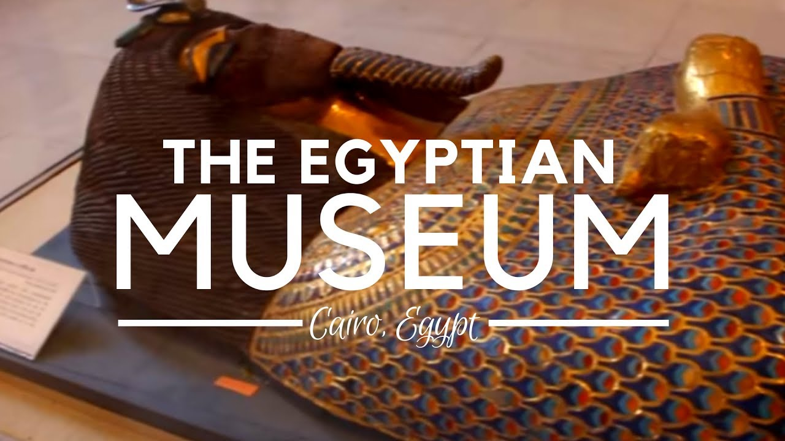
Home to at least 120,000 items of ancient Egyptian antiquities, the Egyptian Museum in Cairo is one of the world’s best museums. There are two main floors of the museum, the ground floor and the first floor. On the ground floor there is an extensive collection of papyrus and coins used in by the ancient Egyptians. On the first floor there are artifacts from the final two dynasties of Ancient Egypt and also many artifacts taken from the Valley of the Kings. Highlights include the objects from the Tomb of Tutankhamen and the Royal Mummy Room containing 27 royal mummies from pharaonic times.
- Vatican Museum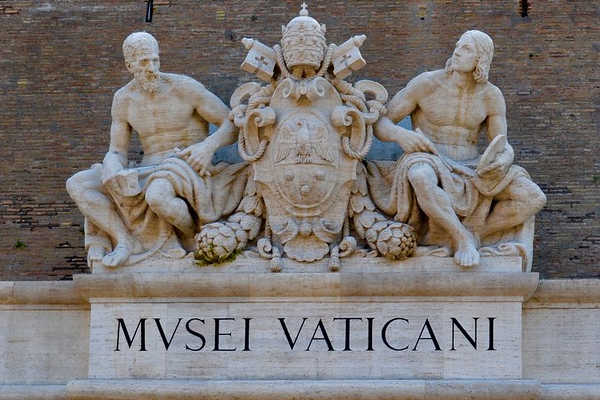
Founded by Pope Julius II in the 6th century, the Vatican Museums inside the Vatican City in Rome are among the best museums in the world. The museums are most famous for the spiral staircase, the Raphael Rooms and the exquisitely decorated Sistine Chapel. Under the patronage of Pope Julius II, Michelangelo painted the chapel ceiling between 1508 and 1512. Today the ceiling, and especially The Last Judgment, are widely believed to be Michelangelo’s crowning achievements in painting.
- Metropolitian Museum of Art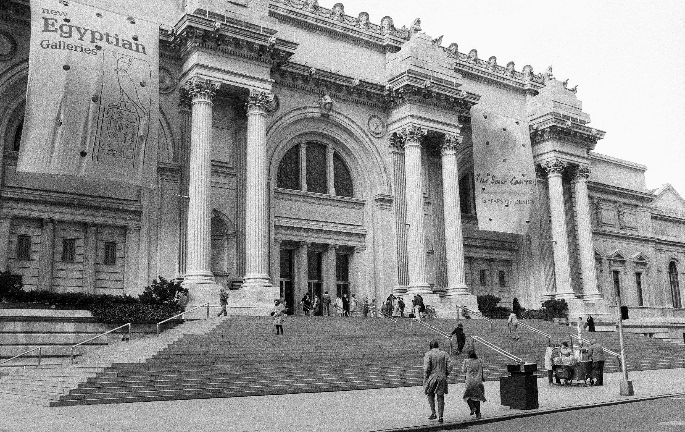
The Metropolitan Museum of Art, also known as The Met, is an art museum located on the eastern edge of Central Park in New York City. This massive gothic-style building, originally opened in 1872 and with numerous expansions added on over time, holds literally hundreds of rooms on its two floors, containing more than two million works of art from across human history and around the world, covering virtually every field of art in existence. In addition to its permanent exhibitions, the Met organizes and hosts large traveling shows throughout the year.
- British Museum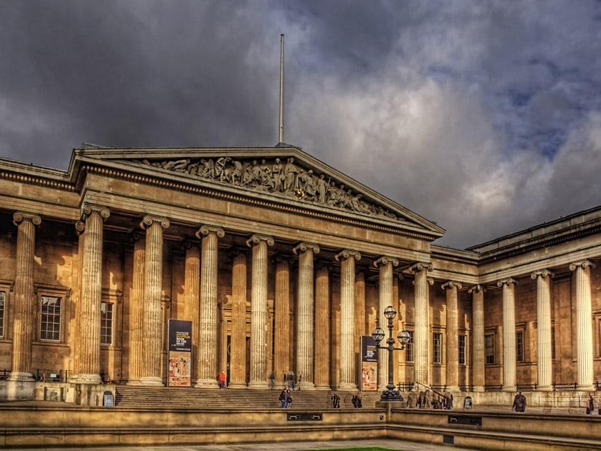
Established in 1753, the British Museum in London is a museum of human history and culture. Its collections, which number more than seven million objects, are amongst the largest and most comprehensive in the world and originate from all continents, illustrating and documenting the story of human culture from its beginnings to the present. Objects include the Rosetta Stone, the key to the deciphering of hieroglyphs, and the largest collection of mummies outside of Egypt. Its one of the top destinations in London.
- Uffizi Gallery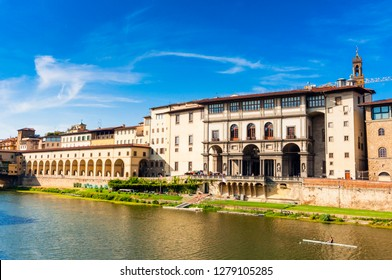
The Uffizi Gallery in Florence, Italy, is one of the oldest and most famous art museums in the world. It is housed in the Palazzo degli Uffizi which was constructed in the 16th century as the offices for the Florentine magistrates. The collections of Renaissance paintings and sculptures from classical antiquity are superb. Included is The Birth of Venus by Sandro Boticelli. There are often long lines starting even before the doors open.
- Hermitage Museum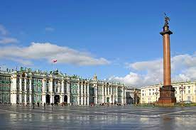
Founded in 1764 by Catherine the Great, the Hermitage Museum in Saint Petersburg, Russia is a massive museum of art and culture showing the highlights of a collection of over 3 million items spanning the globe. A popular tourist attraction, the Hermitage is truly one of the best museums in the world, with an imposing setting displaying priceless works by Rembrandt, Da Vinci, Michealangelo, Reubens and more. The collections occupy a large complex of six historic buildings including the Winter Palace, a former residence of Russian emperors.
- Museum of Modern Art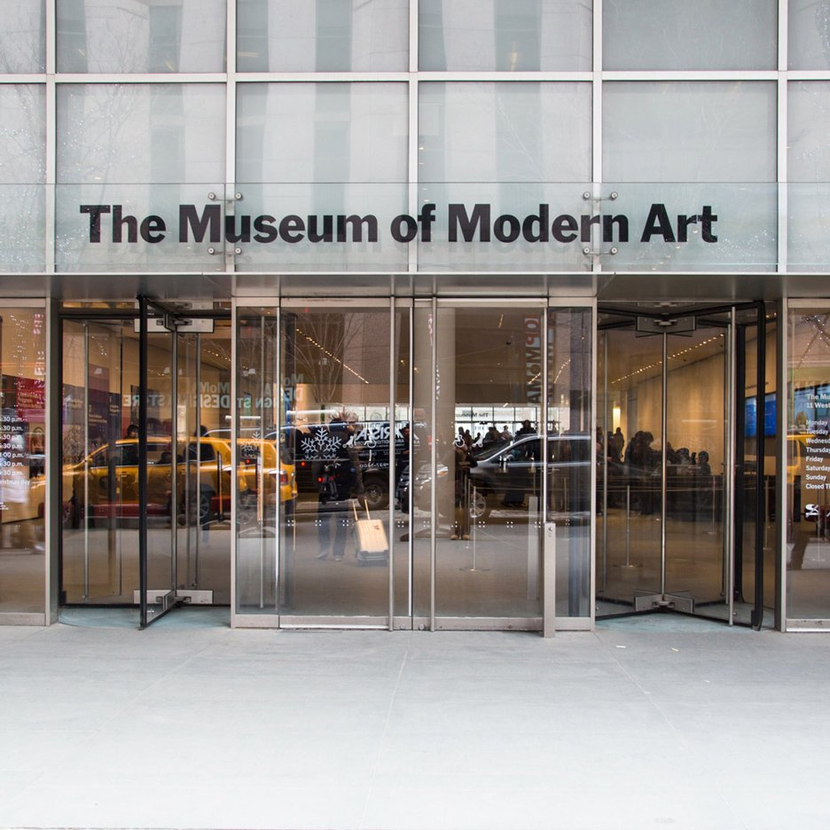
The Museum of Modern Art (MoMA), located in Midtown Manhattan in New York City, is often identified as the most influential museum of modern art in the world. It arguably contains the best collection of modern masterpieces world-wide including Monet’s Water Lilies, Picasso’s Les Demoiselles d’Avignon, and van Gogh’s Starry Night. In addition to the artwork, one of the main draws of MoMA is the building itself. A maze of glass walkways permits art viewing from many angles. In 2004 a $425 million face-lift by Yoshio Taniguchi increased the exhibition space of the museum by nearly 50%.
- Guggenheim Museum Bilbao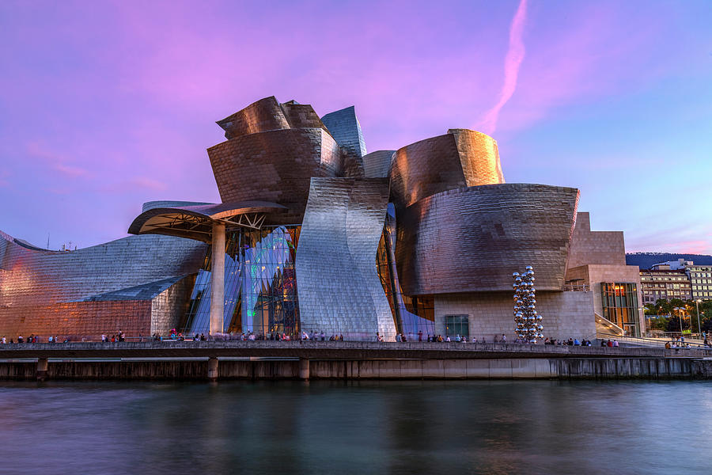
Designed by Frank Gehry, the Guggenheim Museum in Bilbao, Spain is a spectacular twisting titanium-clad modern art museum and perhaps the most celebrated building of the 1990s. The graceful, sensuous curves, evocative of the ships that used to be ubiquitous along the docks of Bilbao, are covered in titanium squares, which resemble the scales of a fish and shimmer in the sunlight. The museum features permanent and visiting exhibits of works by Spanish and international artists.
- National Palace Museum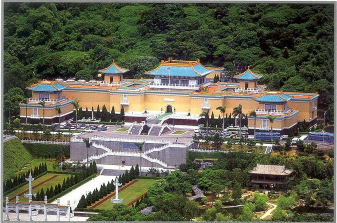
The National Palace Museum in Taipei has the largest collection of ancient Chinese artifacts and artworks in the world. The museum was originally established as the Palace Museum in Beijing’s Forbidden City in 1925, shortly after the expulsion of the last emperor of China. In the final years of the Chinese Civil War the most prized items in the museum’s collection were moved to Taiwan. By the time the items arrived in Taiwan, the communist army had already seized control of the Palace Museum.
- Museo Nacional de Antropologia

The Museo Nacional de Antropología (or National Museum of Anthropology) in Mexico City contains archaeological artifacts from the pre-Columbian heritage of Mexico. Opened in 1964 by, the museum has a number of significant exhibits,such as the giant stone heads of the Olmec civilization and the Sacred Cenote from Chichen Itza. The most famous artifact however is the Stone of the Sun which was actually not used as a calendar but does contain 20 day signs and the 4 era’s of suns that preceded the current 5th sun.
- Prado Museum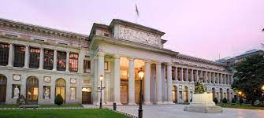
One of the top museums in Spain, The Prado Museum in Madrid features some of the best collections of European art, from the 12th century to the early 19th century. The best known works on display at the museum are the Majas of Goya (La Maja Vestida and La Maja Desnuda) and Las Meninas by Velázquez. Velázquez not only provided the Prado with his own works, but his keen eye and sensibility was also responsible for bringing much of the museum’s fine collection of Italian masters to Spain
- Rijksmuseum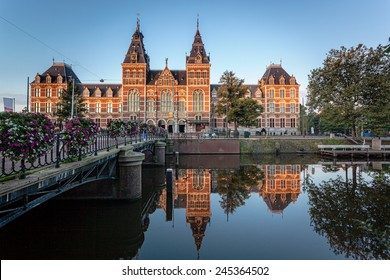
The Rijksmuseum in Amsterdam is the largest and most prestigious museum for art and history in the Netherlands. It has a large collection of paintings from the Dutch Golden Age including works by Vermeer and Rembrandt. Until 2013, the museum is being completely renovated, but the major masterpieces are still on show.
- Tokyo National Museum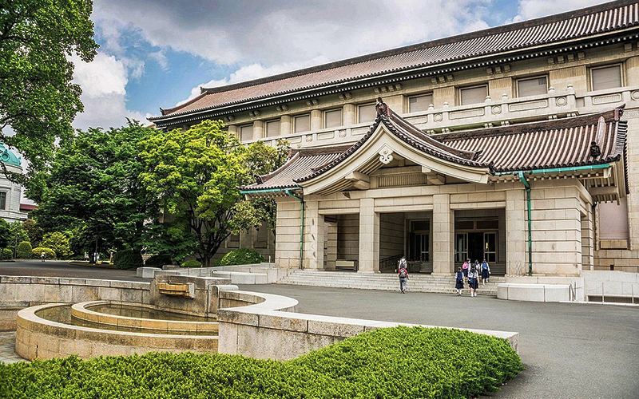
Established 1872, the Tokyo National Museum is the oldest and largest museum in Japan. The museum’s collections focus on ancient Japanese art and Asian art along the Silk Road. There is also a large collection of Greco-Buddhist art.S